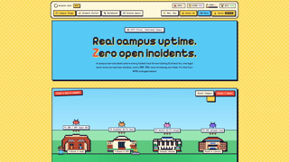
S00.1: Hi, I'm Srijan, and this is Incident-Zero, our Object-Oriented Programming project from Group 76.
S00.1: It is a help desk for campus IT at BITS Pilani Hyderabad.
S00.1: A student reports a problem, the system sorts it and assigns it, and a technician fixes it.
S00.1: Every step is checked by a state machine and written to a log that cannot be edited.
S00.1: And yes, it looks like an arcade game. [laughter] That part was just for fun.

S00.2: In this video I will walk through the repository, open the important files, and explain what each one does.
S00.2: Then I will run the app and connect every click back to the code.
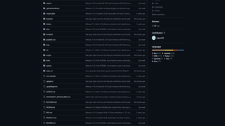
S01.1: This is the repository on GitHub. The readme gives the short version.
S01.1: One Java backend, one React app, and one PostgreSQL database.
S01.1: A ticket is reported, classified, prioritised, assigned, investigated, resolved, verified, and finally closed.
S01.1: Let me go through the folders. The backend folder holds the Java code, built with Spring Boot.
S01.1: The frontend folder holds the React app, written in TypeScript.
S01.1: Inside docs there are fifteen decision records. Each one explains why we made a design choice.
S01.1: The scripts folder has our verification scripts, which I will run at the end.
S01.1: Deploy has the Docker Compose file for the database and the app.
S01.1: And the workflows folder runs our checks automatically on every push.
S01.1: The other folders are tooling, so I will skip them.
S01.1: The real work is in the backend, so let's start there.
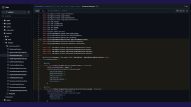
S02.1: Under the main package, the code is split into modules, one folder for each responsibility.
S02.1: Incident is the biggest one. It owns the ticket and its life cycle.
S02.1: Assignment picks a technician, SLA handles deadlines, and audit keeps the tamper-evident log.
S02.1: Identity handles login, notification pushes live updates, and intelligence holds the suggestion features.
S02.1: Catalog, knowledge and shared hold the calendar, the help articles, and common building blocks.
S02.1: Open the incident module and you see four folders.
S02.1: Domain is plain Java. It holds the business rules and knows nothing about Spring or the database.
S02.1: Application runs the use cases, step by step.
S02.1: Infrastructure talks to the outside world, and api is what other modules are allowed to see.
S02.1: The rule is simple. Outer layers can depend on inner ones, but never the other way around.
S02.1: So how do we make sure nobody breaks that rule? [question-en]
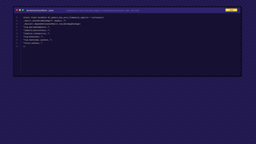
S02.2: With a test. This rule says no class in a domain package may depend on Spring, JPA, or Jackson.
S02.2: If someone adds one such import, the build fails.
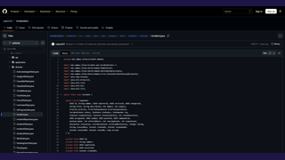
S03.1: Now the domain folder of the incident module. This is the part I built.
S03.1: Notice the file names: NewState, AssignedState, ResolvedState, and so on. I will come back to those.
S03.1: First, the main class, Incident.
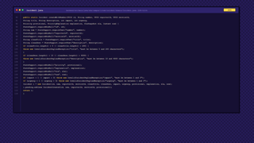
S03.2: This factory method is the only way to create a ticket.
S03.2: The title must be between five and two hundred characters, or it throws an error.
S03.2: The description needs at least ten characters, and impact and urgency must be one, two, or three.
S03.2: Only when everything is valid does it build the object and record an IncidentCreated event.
S03.2: So a broken ticket can never exist. [confirmation-en] The rules live inside the object, and that is encapsulation.
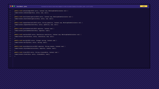
S03.3: These are the actions: acknowledge, resolve, verify, close, and the rest.
S03.3: Look how short they are. Each one just asks the current state object to do the work.
S03.3: The Incident itself never checks which state it is in.
S03.3: Whatever the state returns goes into commit. It switches to the next state and stores the events.
S03.3: It also raises the version number, which helps us catch two people changing the same ticket.
S03.3: Later, the application layer pulls those events out and publishes them.
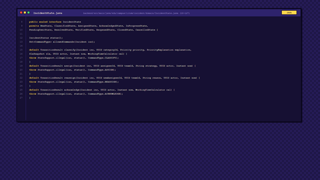
S03.4: So where do the rules live? [question-en] In this interface, IncidentState.
S03.4: It is sealed, and it permits exactly eleven state classes. Nobody can add a twelfth by accident.
S03.4: Every action has a default body, and that default simply throws an illegal transition error.
S03.4: So by default, nothing is allowed. A state has to override a method to make that move legal.
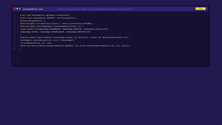
S03.5: Here is AssignedState. It overrides acknowledge.
S03.5: First it checks that the caller is the assigned technician.
S03.5: Then it stops the response clock.
S03.5: And it returns the next state, Acknowledged, together with an event.
S03.5: The same call behaves differently depending on the state object. That is polymorphism, and this is the State pattern.
S03.5: It replaces a long chain of if-else checks.
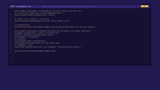
S03.6: One more example, ResolvedState. Only the person who reported the ticket can verify the fix.
S03.6: And the rating must be between one and five.
S03.6: If they reject the fix instead, the ticket is reopened.
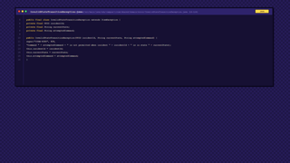
S03.7: An illegal move throws this exception. It sits with fourteen other error classes, all extending one base class.
S03.7: Each error carries its own code and its own HTTP status. That is inheritance doing useful work.
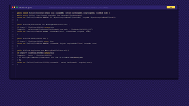
S04.1: Next, time. Every ticket has two deadlines: one to respond, and one to resolve.
S04.1: Each deadline is an SlaClock, and it is a record, so it never changes.
S04.1: Pause does not modify the clock. It returns a new clock with the time used so far.
S04.1: And it asks a calendar how much working time has passed.
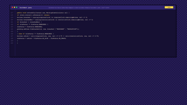
S04.2: Back in Incident, this method reads both clocks. At seventy-five percent used, the ticket is marked at risk.
S04.2: Past the target, it is breached, and a breach is permanent. It never goes back to on track.
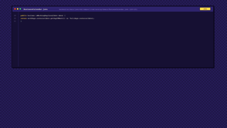
S04.3: That calendar is this class. A working day is a day of the work week that is not a holiday.
S04.3: It walks day by day and adds only the hours inside the working window.
S04.3: So a low priority ticket raised on Friday evening does not breach over the weekend.
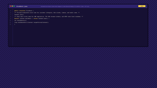
S04.4: One more trick. The code never asks the computer for the time directly.
S04.4: It asks this small interface, ClockPort.
S04.4: The real implementation is a virtual clock. It multiplies elapsed time by a scale factor.
S04.4: So in a demo, one real second can count as thirty, and I can watch a deadline approach.
S04.4: That is abstraction. The domain depends on an interface, not on the system clock.
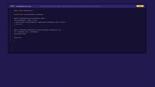
S05.1: Now the application layer. When a ticket comes in, it goes through this folder, the intake pipeline.
S05.1: The pipeline receives every step and sorts them by their order number.
S05.1: Then it runs them one after another, passing the same context object along.
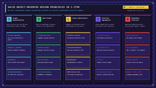
S05.2: There are nine steps. Validate checks the input. Sanitize strips HTML and hides emails and phone numbers.
S05.2: Then we create the incident, link it to a master ticket if there is one, and pick a category.
S05.2: Enrich looks for exam words, then come priority, assignment, and finally saving to the database.
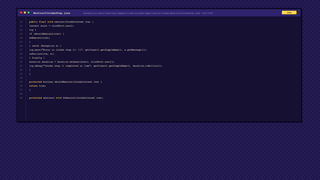
S05.3: All nine extend this abstract class. Its execute method is final.
S05.3: It handles timing and error logging the same way for every step.
S05.3: Each step only fills in this one method, doExecute.
S05.3: The parent fixes the skeleton and the children fill the gap. That is the Template Method pattern.
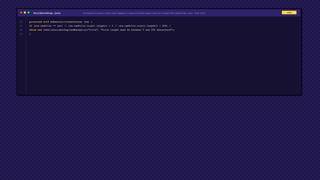
S05.4: For example, step one refuses a title under five characters before anything else happens.
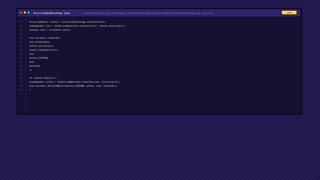
S05.5: Step seven is the interesting one. It asks a priority strategy to calculate the priority.
S05.5: Then it looks up the SLA policy for that service tier and priority.
S05.5: And it calls classify on the incident, which moves it from New to Classified.
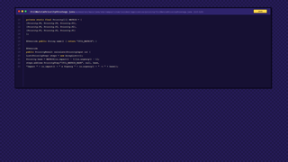
S05.6: The default strategy is a simple matrix of impact against urgency.
S05.6: After that come the bumps. During an exam window, the priority goes up one level.
S05.6: There are three strategies behind one interface. That is the Strategy pattern.
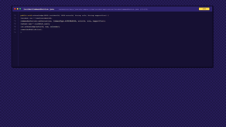
S06.1: After intake, every action on a ticket goes through this class, IncidentCommandService.
S06.1: Every method has the same shape. Load the incident.
S06.1: Check that this user is allowed.
S06.1: Call the domain method we just saw.
S06.1: Then save it and publish its events, all inside one transaction.
S06.1: If anything fails, nothing is saved.
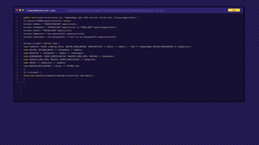
S06.2: And who is allowed? [question-en] That is decided here, in one switch.
S06.2: Only the assigned technician can acknowledge or resolve.
S06.2: Only the student who reported it can verify or reject the fix.
S06.2: And only a team lead or an admin can declare a major incident.
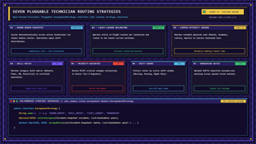
S06.3: Choosing the technician works the same way as priority. One interface, AssignmentStrategy.
S06.3: And seven implementations: round robin, least loaded, skill match, experience, and a few more.
S06.3: There is even one that assigns a whole batch of tickets together.
S06.3: Least loaded first removes anyone who is off shift or already full.
S06.3: Then it sorts by load and takes the least busy person.
S06.3: Because they share one interface, changing the strategy is a setting, not a code change.
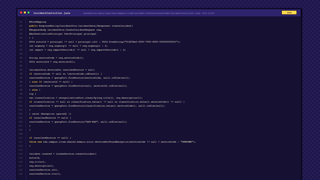
S07.1: Now the outer layer, infrastructure. This is where the outside world connects.
S07.1: IncidentController is the REST entry point. This method handles a new ticket.
S07.1: It reads the request, hands it to the intake service, and returns the created ticket.
S07.1: Notice there are no business rules here. The controller only translates.
S07.1: The second method takes the action name from the URL.
S07.1: A switch maps each name to the matching service method.
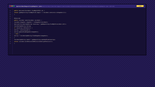
S07.2: For the database we use the same idea. The domain defines an interface called IncidentRepository.
S07.2: This adapter implements it with JPA.
S07.2: It converts the incident to a snapshot and back, so the domain class has no database annotations.
S07.2: This is the Adapter pattern. We could change the database without touching the domain.
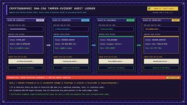
S07.3: Now my favourite part, the audit ledger.
S07.3: This listener hears every event, and it runs inside the same transaction as the change.
S07.3: It locks the incident row and reads the hash of the last entry.
S07.3: Then it computes a new hash that includes that previous hash.
S07.3: The hasher joins the previous hash, the time, the actor, the action and the payload, then runs SHA-256.
S07.3: So every entry is chained to the one before. Change one old row, and every later hash stops matching.
S07.3: But what stops someone from quietly editing the table itself? [question-en]
S07.3: The database itself refuses to update or delete audit rows. This trigger blocks it.
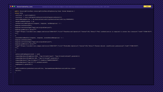
S07.4: Security is configured in one place. Login is open, and everything else needs a token.
S07.4: And the admin routes need the administrator role.
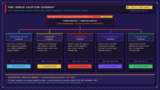
S07.5: Finally, errors. This handler catches any of our exceptions.
S07.5: It turns them into a standard error response with our own error code.
S07.5: So the frontend always gets a clear reason, never a stack trace.
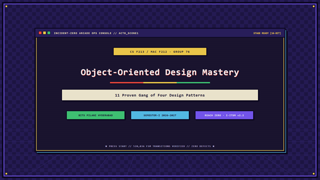
S08.1: The frontend is much simpler. Let me go back and open it.
S08.1: Services talk to the backend, context holds login and live updates, and pages are the screens.
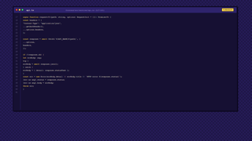
S08.2: Every request goes through this one function. It attaches the login token.
S08.2: If the server sends an error, it throws it with the server's own message.
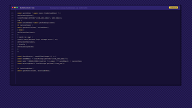
S08.3: Switching user logs in again and stores the new token.
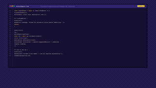
S08.4: This is the submit handler of the report form. It calls create with the title, description and service.
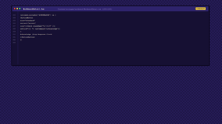
S08.5: And this is the technician screen. A button is drawn only if its action is in the allowed list.
S08.5: That list comes from the state object in the backend. The frontend never decides what is legal.
S08.5: Okay, enough code. [sigh] Let's actually run it.
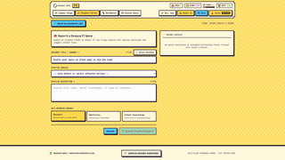
S09.1: I am logged in as Aarav, a student.
S09.1: His Moodle quiz will not open, so he reports it.
S09.1: As I type, the copilot reads the text and suggests the affected service, Moodle LMS.
S09.1: I set the urgency to high, and submit.
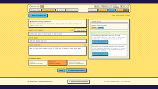
S09.2: Pause. This click runs the submit handler I showed you.
S09.2: It sends a POST request to the incidents route.
S09.2: The controller receives it and calls the intake service.
S09.2: The pipeline runs its nine steps.
S09.2: Step three calls the factory method, which checks the rules and records the event.
S09.2: Step nine saves the ticket and publishes its events.
S09.2: And the audit listener writes the first links of the hash chain.
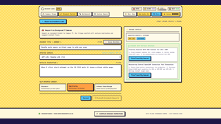
S09.3: And here is the result. [confirmation-en] The ticket is already assigned to a technician.
S09.3: It came out as priority two. The word quiz triggered the exam bump we saw in the matrix.
S09.3: For this service and priority, the policy gives fifteen minutes to respond and two hours to resolve.
S09.3: Below is the timeline, with one hashed entry for each step so far.
S09.4: Now I switch to the technician it was assigned to.
S09.4: The ticket is in his queue. There is no Resolve button yet, because the state does not allow it.
S09.4: He clicks acknowledge.

S09.5: The button calls runCommand, which posts the action name.
S09.5: The controller's switch picks the acknowledge method.
S09.5: The service loads the ticket and asks the authorizer.
S09.5: He is the assignee, so it passes.
S09.5: AssignedState stops the response clock and returns the next state.

S09.6: The state is now Acknowledged, and the response clock has stopped.
S09.6: He starts the investigation, and the state becomes In Progress.
S09.6: He needs more details, so he asks the student a question.
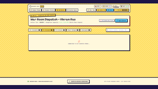
S09.7: In the code, InProgressState pauses the resolution clock.
S09.7: That is the pause method from earlier, returning a paused clock.

S09.8: So while we wait for the student, the technician is not blamed for the delay.
S09.8: Back to Aarav. He sees the question and answers it.
S09.8: The state goes back to In Progress, and the clock runs again.
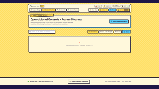
S09.9: The technician fixes the problem and resolves the ticket with a proper note.
S09.9: The note needs at least twenty characters. A lazy note like "done" is rejected by the domain. [dissatisfaction-hnn]

S09.10: Aarav checks Moodle, gives five stars, and confirms the fix.
S09.10: This sends the verify action with the rating.
S09.10: ResolvedState checks that he is the reporter, then moves the ticket to Verified.

S09.11: The ticket is now Verified.
S09.11: Finally the technician closes it. [confirmation-en] The ticket is closed, and the state allows no further moves.
S09.11: And the timeline shows the full story: who did what, when, and the hash of each entry.
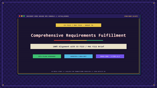
S10.1: Now let me try to cheat. I will ask the server to close that ticket again.
S10.1: The server says no. [surprise-oh] Error 409, with the current state and the command I tried.
S10.1: That is the default method in IncidentState, doing its job.
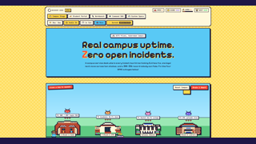
S10.2: Next, the audit ledger. As the admin, I ask the server to verify every chain.
S10.2: It recomputes every hash and compares it with the stored one.
S10.2: Every entry is valid.
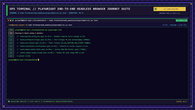
S10.3: Now I try to change an old entry directly in the database.
S10.3: The database refuses. [laughter] The audit table is append only.
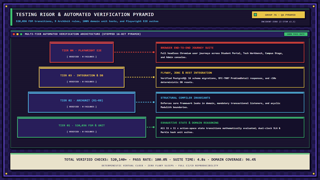
S10.4: Last, the tests. This script fires fifty thousand random command sequences at the state machine.
S10.4: Twenty-four checks pass, covering more than five hundred and fifty thousand transitions, in a few seconds.
S10.4: And the architecture rules I showed at the start all pass too.
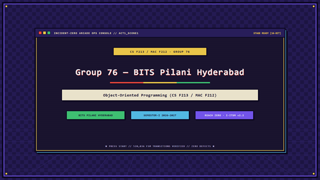
S11.1: That is Incident-Zero. It was built by Group 76: Suhani Agarwal, Kartikey Negi, Harish Kumar, and me, Srijan Shukla.
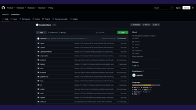
S11.2: The object-oriented ideas were not decoration. Encapsulation, inheritance, polymorphism and abstraction each solved a real problem here.
S11.2: The code is on GitHub, at the address on screen. Thank you for watching.